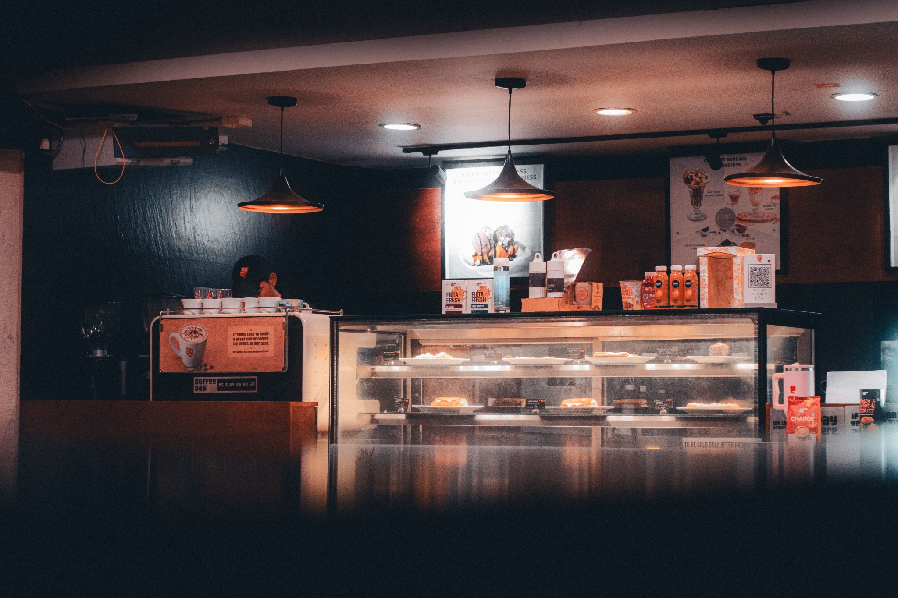

Speciality Coffee
Espresso-based favourites, filter coffee and seasonal drinks prepared throughout the day.
Explore coffeeNeighbourhood coffee. Fresh food. Good company.
Oak & Bean Coffee is a relaxed local café created for people who enjoy quality coffee, fresh food and a comfortable place to meet, work or slow down.

Our offering
Espresso-based favourites, filter coffee and seasonal drinks prepared throughout the day.
Explore coffeeSimple breakfast and lunch options made for quick visits, meetings and relaxed catch-ups.
Explore foodFresh pastries and sweet treats that pair perfectly with your morning or afternoon coffee.
Explore baked goods
About us
We want Oak & Bean Coffee to feel familiar from the first visit. Our focus is friendly service, consistent quality and a calm space where people can connect.
Read our storyHours: Monday–Friday 07:00–17:30, Saturday–Sunday 08:00–16:00
Location: 18 Willow Street, Johannesburg, Gauteng
View contact details